| Lv06_0001 |
|
てきちょく |
少し歩いては止まること。 |
| Lv06_0002 |
|
いとう |
サケ目サケ科の魚。日本最大級の淡水魚として知られる。 |
| Lv06_0003 |
|
ちゃー |
想像上のアナグマに似た動物。『故郷』より。 |
| Lv06_0004 |
|
きささげ、きささぎ |
シソ目ノウゼンカズラ科の落葉高木。『カミナリササゲ』『カワギリ』とも。 |
| Lv06_0005 |
 |
へつほつ |
左右に揺れるさま。多く、船が波に揺れているさまをいう。 |
| Lv06_0006 |
|
くるりや |
キリまたはヒノキで作った小鏑の先端に、半月形の小雁股をつけた矢。 |
| Lv06_0007 |
|
ゆう |
古代中国で用いられた、酒を入れる壺。 |
| Lv06_0008 |
|
ひだり |
正面を南に向けたときの東側にあたる側。また、左手のこと。 |
| Lv06_0009 |
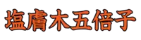 |
ぬるでのみみふし |
半翅目アブラムシ科の虫。ヌルデに寄生し、虫こぶをつくる。 |
| Lv06_0010 |
|
しぶき |
ドクダミの古名。 |
| Lv06_0011 |
|
やなぎ |
キントラノオ目ヤナギ科の樹木の総称。特にシダレヤナギを指す。 |
| Lv06_0012 |
|
ちょうと、ちょうとう |
炊飯の鍋と夜警の銅鑼を兼ねた軍用道具。 |
| Lv06_0013 |
|
さが |
見つけ出そうとする。 |
| Lv06_0014 |
|
ようぜん |
ぼんやりするさま。気を失うさま。 |
| Lv06_0015 |
|
ほきないでん |
安倍晴明が編纂したと伝承される、占いの専門、実用書。 |
| Lv06_0016 |
|
したが |
後ろについて行く。あとに続く。 |
| Lv06_0017 |
|
つい |
結局は。最後には。行きつくところは。 |
| Lv06_0018 |
|
たてい |
がっかりすること。 |
| Lv06_0019 |
|
りすぞく |
東南アジアに住む少数民族のひとつ。 |
| Lv06_0020 |
|
あしき |
刑罰として、罪人の足を断ち切る。 |
| Lv06_0021 |
|
つづし |
少しだけ食事をする。 |
| Lv06_0022 |
|
さら |
不意をついて奪い去る。 |
| Lv06_0023 |
 |
そううん |
怪しい。また、怪しげな雲。 |
| Lv06_0024 |
|
いくいく |
草木が茂るさま。また、物事の盛んなさま。 |
| Lv06_0025 |
|
ばくき |
伝説上の獣の名。人の脳を食うとされる。 |
| Lv06_0026 |
|
かいち、かいたい |
牛に似た神獣の名。人の善悪を理解し、悪人を角で突く。 |
| Lv06_0027 |
|
わか |
生まれてから多くの年数を経ていない。年齢が少ない。 |
| Lv06_0028 |
|
おごそ |
気持が引き締まるほどおもおもしいさま。 |
| Lv06_0029 |
|
けいけい |
孤独なさま。一人ぼっち。 |
| Lv06_0030 |
|
すくもむし |
地中にいる昆虫。主にコガネムシ類の幼虫を指す。 |
| Lv06_0031 |
|
どうさ、どうしゃ |
塩化アンモニウム。 |
| Lv06_0032 |
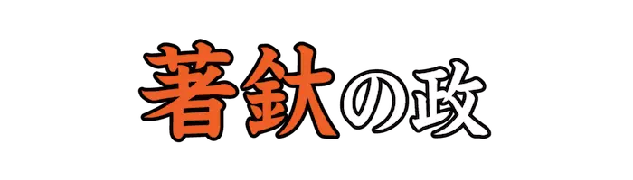 |
ちゃくだ |
罪人に首かせをつけて衆人の中に連行し、見せしめの懲罰を加える平安時代の刑法。 |
| Lv06_0033 |
|
かなふぐし、かなぶくし |
鉄製の、土を掘る道具。鉄製のふぐし。 |
| Lv06_0034 |
|
おおべしみ |
能面の一種で、天狗、鬼畜を表すべしみ。口を一文字に引き結んだ、相貌で大形な面。 |
| Lv06_0035 |
|
つまこ |
妻子。妻と子。 |
| Lv06_0036 |
|
じとうばん |
纛幡の一つ。中古、朝廷で大儀の際に立てる儀仗のはた。 |
| Lv06_0037 |
|
きぎゅう |
中国神話における神、動物、人物、妖怪。一本足の龍の姿で表されるとされる。 |
| Lv06_0038 |
|
たましい |
亡くなった者の霊魂。 |
| Lv06_0039 |
|
か |
中国古代の礼器のひとつ。酒を温めるために使われた。 |
| Lv06_0040 |
|
ぬえこどり |
トラツグミの別名。 |
| Lv06_0041 |
|
えぶりす |
田植前の田の土をえぶりでならす作業。『荒くろ摺り』とも。 |
| Lv06_0042 |
|
もっ |
手段、材料を表す語。によって。 |
| Lv06_0043 |
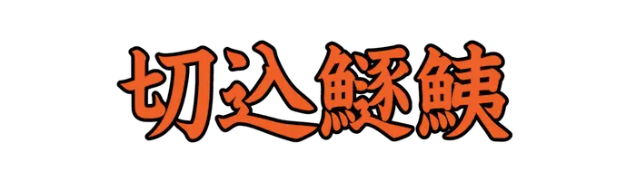 |
きりこみうるか |
頭と尾鰭を取り去ったアユをたたき、麹とみりんを少し加えて塩漬けにした食品。 |
| Lv06_0044 |
|
いちびそ |
イチイガシの別称。 |
| Lv06_0045 |
|
ふつのみたま |
日本神話に登場する霊剣。古来、石上神宮の祭神とされている。 |
| Lv06_0046 |
|
いとう |
便器。おまる。 |
| Lv06_0047 |
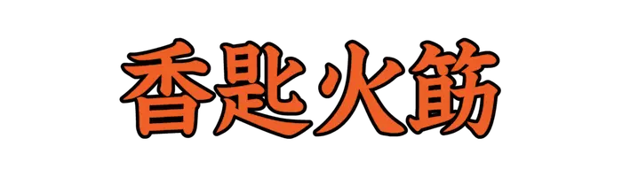 |
きょうじこじ |
座敷飾りや聞香席で用いる香匙と火箸。また、それを差す小型の瓶。 |
| Lv06_0048 |
|
うめ |
バラ目バラ科の落葉高木。果実は梅干などに加工して食用とされる。 |
| Lv06_0049 |
|
にら |
刀に焼き入れをする。 |
| Lv06_0050 |
|
きばのろ |
偶蹄目シカ科の動物。河川や湖沼の周辺、湿地帯などに生息する。 |
| Lv06_0051 |
|
いずみ |
地中からわき出る水。 |
| Lv06_0052 |
|
あやま |
あやまちをおかす。また、度をこす。 |
| Lv06_0053 |
|
むしのたれぎぬ |
笠の周辺に垂らす布。平安時代から鎌倉時代にかけて用いられた。 |
| Lv06_0054 |
|
たべもの |
ごちそう。食事。 |
| Lv06_0055 |
|
ほだ |
つなぎとめる。馬の足をつなぐ。 |
| Lv06_0056 |
|
へっつい |
かまどのこと。 |
| Lv06_0057 |
|
みのたいらぎ |
ハボウキガイ科ウグイスガイ目の貝。 |
| Lv06_0058 |
|
くかへ、くかべ |
大化前代、探湯(くかたち)に用いた釜。 |
| Lv06_0059 |
|
ひすか、ひずか |
心がねじけている。ひねくれている。また、口やかましい。 |
| Lv06_0060 |
|
のせ |
ハイタカの別名。 |
| Lv06_0061 |
 |
やしな |
食物などを与えて育てる、または生活させる。 |
| Lv06_0062 |
|
ぎゅうぎつ |
がやがやと多くの物音がまじるさま。 |
| Lv06_0063 |
|
にげか、にれか |
食物を反芻する。 |
| Lv06_0064 |
 |
きつきつ |
笑う声のこと。 |
| Lv06_0065 |
|
みだらおのうま |
葦毛の馬。 |
| Lv06_0066 |
|
かわら |
膝がしらの部分をおおう皿状の骨。膝のさら。 |
| Lv06_0067 |
|
すずしろ、すずじろ |
幼児の髪の、頭の上だけを切らずに残したもの。 |
| Lv06_0068 |
|
ほたきこと |
誇らしく話すこと。高らかに談笑すること。 |
| Lv06_0069 |
|
みずち、きゅう |
想像上の動物。竜の子で、角を持つもの。毒気を吐いて人を害すると言い伝えられる。 |
| Lv06_0070 |
|
かいたい |
疲弊すること。病むこと。 |
| Lv06_0071 |
|
めなもみ |
キク目キク科の一年草。温帯から亜熱帯に生育する。 |
| Lv06_0072 |
|
さずき |
材木を綱で結んで仮に作った床または棚。 |
| Lv06_0073 |
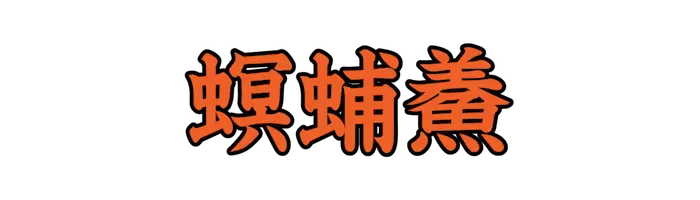 |
めいふしょう |
イカを干したもの。するめ。 |
| Lv06_0074 |
|
かめのて |
有柄目ミョウガガイ科の動物。エビ、カニなどと同じ甲殻類の一種。 |
| Lv06_0075 |
|
すがるおとめ |
ジガバチのように腰細でなよやかな美しい少女。 |
| Lv06_0076 |
|
せんき |
美しい珠で飾った天文観測の器、渾天儀のこと。 |
| Lv06_0077 |
|
つだみ |
乳児がいったん飲んだ乳をはくこと。乳をあますこと。 |
| Lv06_0078 |
|
おそば、おそいば |
普通の歯のうしろやわきに、重なるようにあとからはえる歯。八重歯。 |
| Lv06_0079 |
|
ゆづかかなぐ |
弓の中央部分に装飾として取り付けた金具。 |
| Lv06_0080 |
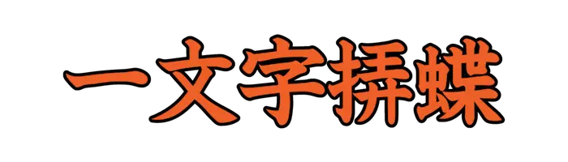 |
いちもんじせせり |
チョウ目セセリチョウ科の昆虫。日本全土に分布する。 |
| Lv06_0081 |
 |
まなかぶら |
目の上下の縁。目のふち。 |
| Lv06_0082 |
|
あつぶたがい |
中腹足目ヤマタニシ科の貝。 |
| Lv06_0083 |
|
ぬたはだ |
鹿の角の表面にある波紋。 |
| Lv06_0084 |
|
しゅだおん |
仏語。見道において三界の見惑を断じて、初めて聖者の類にはいる位。 |
| Lv06_0085 |
|
すぐ |
人よりも飛び抜けている。ひいでる。まさる。 |
| Lv06_0086 |
|
やさ |
細やかで柔らかな感じを与える有様である。 |
| Lv06_0087 |
|
ぎんぎん |
穏やかに議論するさま。和やかなさま。 |
| Lv06_0088 |
|
きぎんとう |
城の屋根の棟に置く、しゃちほこと同類の魔除けの怪像。 |
| Lv06_0089 |
|
かいかいほう |
中国元の時代、ペルシア人技術者アラーとイスマーイールが製作した投石機。 |
| Lv06_0090 |
|
おきの、おぎの |
代価を借りて、物を買う。掛けで買う。 |
| Lv06_0091 |
|
あきさ |
先払いで品物を買う。または、売る。手付金を払う。 |
| Lv06_0092 |
|
だくの |
やや足早に馬を駆けさせること。 |
| Lv06_0093 |
|
ねら |
的を狙う。機会をうかがう。 |
| Lv06_0094 |
|
あなひら |
足の甲。足のひら。 |
| Lv06_0095 |
|
えぐ |
いがらっぽい。のどを刺激するような味がする。 |
| Lv06_0096 |
|
した |
竹製のざるで酒をこす。 |
| Lv06_0097 |
|
しぎやまつみ |
木の繁っている山をつかさどる神。『古事記』より。 |
| Lv06_0098 |
|
しおで |
鞍の前輪と後輪の左右両方にとり付け、むながい、しりがいを結びつける馬具。 |
| Lv06_0099 |
|
つし、つじ |
肌に赤黒い斑点などが出る。黒ずむ。 |
| Lv06_0100 |
|
えどもとゆい |
日本髪を結うとき根元を束ねるのに使う紐。古く、江戸で作られたところからいう。 |
| Lv06_0101 |
|
あつえびと |
重病の人。危篤の病にかかっている人。 |
| Lv06_0102 |
|
こうこう |
心がひろく、ゆったりとしているさま。 |
| Lv06_0103 |
|
めくばせ、めくわせ |
まばたきして意志を伝えること。目を動かして合図すること。 |
| Lv06_0104 |
|
こうれんたい |
中国古典詩の詩風の一体。男女の官能的な情愛をうたったもの。 |
| Lv06_0105 |
|
きょうじょ |
明らかなさま。また、音などがはっきりしているさま。 |
| Lv06_0106 |
|
こぞ |
残らず集める。また、ことごとく集まる。残らずそろう。 |
| Lv06_0107 |
|
ぽん |
麻雀で、刻子を作れる牌を他家が捨てたとき「ポン」と言ってそれをもらうこと。 |
| Lv06_0108 |
|
いしばり |
寒さや恐怖などで、身のちぢむような思いをすることのたとえ。 |
| Lv06_0109 |
|
おそね |
石まじりのやせ地。そね。 |
| Lv06_0110 |
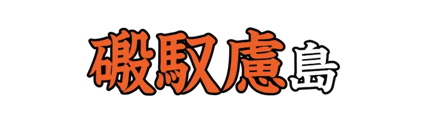 |
おのころじま、おのごろじま |
日本神話で、伊弉諾尊と伊弉冉尊の二神が、はじめて作ったという島。 |
| Lv06_0111 |
|
しんにょう、しんにゅう |
漢字の部首、繞(にょう)の一つ。 |
| Lv06_0112 |
|
ひすら、ひすろ |
すれて薄くなる。薄れて弱まる。 |
| Lv06_0113 |
|
おぎろ |
広大である。果てしなく奥深い。 |
| Lv06_0114 |
|
うぐ |
灸をすえたあとや傷などがただれる。水気をもって腫れる。 |
| Lv06_0115 |
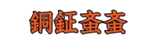 |
どうがねぶいぶい |
甲虫目コガネムシ科の昆虫。農作物などの根を食べる害虫とされている。 |
| Lv06_0116 |
|
からみわた |
銑鉄から出るからみを、溶解状態のまま高圧蒸気で噴射させて綿状にしたもの。 |
| Lv06_0117 |
|
けずりぎわ |
中世武士の武芸鍛練法である、犬追物(いぬおうもの)をする馬場の囲い。 |
| Lv06_0118 |
|
いっけつ |
音楽の一曲が終わること。また、音曲や遊芸、講談などの一段落。 |
| Lv06_0119 |
|
あまひき |
日照り続きのとき、雨の降ることを神仏に祈ること。雨乞い。 |
| Lv06_0120 |
|
したぐら |
鞍橋の下につけ、馬の両脇に当てるための馬具。 |
| Lv06_0121 |
|
へんばい |
陰陽師が邪気を払い除くため、呪文を唱え大地を踏みしめ、千鳥足に歩む呪法。 |
| Lv06_0122 |
|
とねりこばのかえで |
ムクロジ目カエデ科の落葉低木。寒冷地の植樹に適しているとされる。 |
| Lv06_0123 |
|
おお |
数や量がおおい。 |
| Lv06_0124 |
|
ひよめき、ひよむき |
幼児の頭蓋骨の境目で、骨化がまだ進んでいない結合組織膜の部分。泉門。 |
| Lv06_0125 |
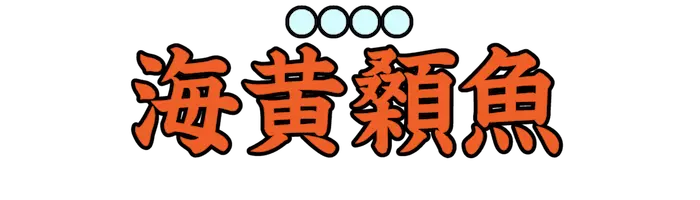 |
ごんずい |
ナマズ目ゴンズイ科の魚。背びれと胸びれに蛋白質の毒をもっている。 |
| Lv06_0126 |
|
かたかゆ、かたがゆ |
かたく煮た、かゆ。現在の飯にあたる。 |
| Lv06_0127 |
|
ろんけつ |
罪をさばくこと。裁判。 |
| Lv06_0128 |
|
えび |
エビ類の総称。 |
| Lv06_0129 |
|
たたず |
たちどまる。一定の場所にしばらくの間じっとしている。 |
| Lv06_0130 |
|
いもせのおしどり |
歌舞伎、浄瑠璃の外題。 |
| Lv06_0131 |
|
ひばりげ |
馬の毛色の名。黄と白のまだらで、たてがみと尾と背の中央部とが黒いもの。 |
| Lv06_0132 |
|
さしば |
タカ目タカ科の鳥。人里近くに現れ、水田などで狩りをする。 |
| Lv06_0133 |
|
ばっかつ |
元気なさま。健やかなさま。 |
| Lv06_0134 |
|
くびち、くひち |
獣を捕えるしかけ。くいつ。 |
| Lv06_0135 |
|
ぽこぺん |
禁止、拒絶することなどの意。いけない。だめ。話にならない。 |
| Lv06_0136 |
|
こくみ |
こぶ、いぼなど皮膚の一部や筋肉などが病的に盛りあがったもの。 |
| Lv06_0137 |
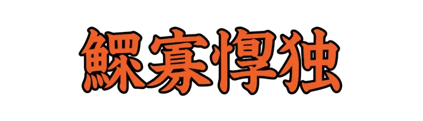 |
かんかけいどく |
よるべのない独り者。『鰥寡孤独(かんかこどく)』とも。 |
| Lv06_0138 |
|
ひきさらえ |
農具の一つ。土をかきならすのに用いる。 |
| Lv06_0139 |
|
かんが |
思いはかる。 |
| Lv06_0140 |
|
こおり |
固体の状態にある水のこと。 |
| Lv06_0141 |
|
てるひ |
照り輝く太陽。日輪。また、天下に照臨する人の意で、天子、天皇をいう。 |
| Lv06_0142 |
|
ひかげ |
日の影。物にさえぎられて日光が当たらない所。 |
| Lv06_0143 |
|
またぶりづえ |
またに分かれた枝で作った杖。 |
| Lv06_0144 |
|
なかだな |
和船の船底部を構成する主要外板で、加敷の両側に大きく開いて結合される船底側板。 |
| Lv06_0145 |
|
こうやまき |
ヒノキ目コウヤマキ科の常緑高木。古墳時代の棺に広く用いられていた。 |
| Lv06_0146 |
|
からすうり |
ウリ目ウリ科のつる性多年草。林や藪の草木にからみついて成長する。 |
| Lv06_0147 |
|
わくかせわ |
能楽の小道具の一つ。つむいだ糸を巻きとる糸車を意味する。 |
| Lv06_0148 |
|
まるめいら |
バラ目バラ科の落葉高木または低木。マルメル、マルメロとも。 |
| Lv06_0149 |
|
およ |
ある所や時、状態などに達する。 |
| Lv06_0150 |
|
そあいはんのう |
有機化学におけるアルキル化のひとつ。発見者の名から。 |
| Lv06_0151 |
|
べきかんむり |
漢字の冠のひとつ。わかんむり。 |
| Lv06_0152 |
|
けごろも |
鳥の羽毛。また、羽毛で作った衣服。羽衣。 |
| Lv06_0153 |
|
わいばく、かいはく |
中国東北地方の南東部から、朝鮮の北部に住んでいたツングース系民族。 |
| Lv06_0154 |
|
こうき |
ひろびろとして清らかな大気。転じて、いきいきとした奔放な雰囲気。 |
| Lv06_0155 |
|
かが |
きらきらと輝くこと。照り輝くさま。 |
| Lv06_0156 |
|
いくよう |
明らかに輝くさま。 |
| Lv06_0157 |
|
ゆ |
物を熱湯に入れて煮る。また、患部を湯に浸したり、蒸したりする。 |
| Lv06_0158 |
|
うい |
物を熱い灰の中に入れて焼く。うずみやきにする。 |
| Lv06_0159 |
|
いき |
あつくなる。ほてる。むしむしする。 |
| Lv06_0160 |
|
ひばかり |
有鱗目ナミヘビ科のヘビ。 |
| Lv06_0161 |
|
こんでいこま、こんでいごま |
悉達太子が、出家するため王宮を去るときに乗った白い馬の名。 |
| Lv06_0162 |
|
えのこしゅう |
江戸初期の俳諧集。一七巻五冊。貞門俳諧の最初の選集として知られる。 |
| Lv06_0163 |
|
あっとり |
アトリの異名。 |
| Lv06_0164 |
|
こいぐち |
刀剣の鞘の口。刃を呑み入れる所。 |
| Lv06_0165 |
|
もちあわ |
アワの品種。穀粒の粘りけの強いもの。餠、水飴、酒などに用いる。 |
| Lv06_0166 |
|
おろかおい |
刈ったあと種がこぼれて自然に生えた稲。また、草木の切り株から生えた芽。 |
| Lv06_0167 |
|
すかり |
鉱脈、岩石などの中にできた空洞。多く、水晶など美しい結晶が成長している。 |
| Lv06_0168 |
|
ふなどこ |
船中の床に敷くすのこ。転じて、船底の積荷場所。 |
| Lv06_0169 |
|
つえ |
手に持ち地面について、歩行のたすけとする棒。特に、竹で作った杖。 |
| Lv06_0170 |
 |
まきはだ |
槇の木の皮を柔らかくしてゆるい縄状にしたもの。 |
| Lv06_0171 |
|
たかむな |
タケノコの古名。 |
| Lv06_0172 |
|
そうこう |
山などが、高くけわしいさま。 |
| Lv06_0173 |
|
ささり |
ジガバチのこと。 |
| Lv06_0174 |
|
きぬたたみ |
絹製の敷き物。太さのそろわない絹の糸で織った敷き物。 |
| Lv06_0175 |
|
すがぬ |
すがいとで小袖の縫い紋や刺繍模様を入れる縫い方。 |
| Lv06_0176 |
|
かとり |
かとりで仕立てた衣服。夏のはじめに着る。 |
| Lv06_0177 |
|
ゆはた |
絞り染め。くくり染め。また、絞り染めにした布や革。 |
| Lv06_0178 |
|
ほだり |
酒を入れて杯につぐのに用いる、たけの高い銚子。小形の酒樽。 |
| Lv06_0179 |
|
あわだこ、あわたこ |
膝蓋骨の古称。ひざざら。 |
| Lv06_0180 |
|
べんかがたま |
昔、中国にあったという名玉。『和氏璧(かしのたま)』とも。 |
| Lv06_0181 |
|
ところ |
ヤマノイモ目ヤマノイモ科のつる性多年草。特にオニドコロを指すことがある。 |
| Lv06_0182 |
|
おなもみ |
キク目キク科の一年草。各地の荒地、道ばたなどに生える。 |
| Lv06_0183 |
|
ばいまわ |
ばいごまを回して勝負を争う遊び。ばいうち。 |
| Lv06_0184 |
|
はたはた |
バッタの別名。 |
| Lv06_0185 |
|
どうほえ |
掛物の表装のひとつ。宸翰、古筆、絵画などに用いられる。 |
| Lv06_0186 |
|
とばりあげ |
即位、朝賀などの大礼のときに、高御座の南面の帳をあげる儀式。 |
| Lv06_0187 |
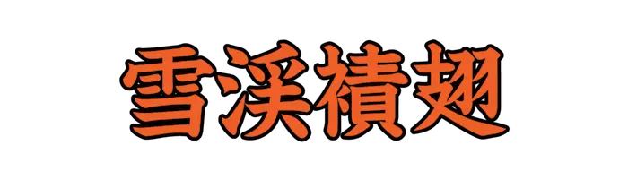 |
せっけいかわげら |
カワゲラ目クロカワゲラ科の昆虫。雪の中の藻類や原生動物などを捕食する。 |
| Lv06_0188 |
|
しょうふく |
勢いや力におそれて屈伏、服従すること。 |
| Lv06_0189 |
|
いすか |
心がねじけている。かたくなである。みだりがわしい。ひすかし。 |
| Lv06_0190 |
|
あ |
出会う。あつまる。 |
| Lv06_0191 |
|
あかみず |
船体の結合部や損傷部などから浸入して船底にたまった水。 |
| Lv06_0192 |
|
つつ |
外側からおおう。くるむ。 |
| Lv06_0193 |
|
じっきんろう |
李漁の短編小説集『覚世名言十二楼』の十二編のうちのひとつ。 |
| Lv06_0194 |
|
わりふ |
木片や竹片などに証拠となる文字などをしるし、それを二つに分割したもの。 |
| Lv06_0195 |
|
みみかざり、みみぐさり |
耳たぶにつけたり、貫いたりして使う飾り。 |
| Lv06_0196 |
|
あまどころ |
キジカクシ目キジカクシ科の多年草。 |
| Lv06_0197 |
|
がざみ |
エビ目ワタリガニ科に分類されるカニ。遊泳脚をもち、海中をすばやく泳げる。 |
| Lv06_0198 |
|
いしずえ、いしすえ |
建造物の柱、壁などの下に土台となる石をすえること。また、その石。 |
| Lv06_0199 |
|
さいなん |
こまかくやわらかなこと。また、そのもの。 |
| Lv06_0200 |
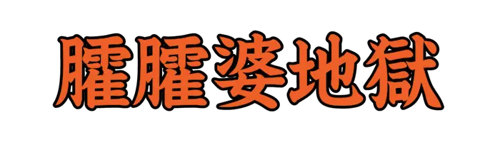 |
かかばじごく |
八寒地獄の第四。寒さのあまり舌がもつれて「ははば」という声しか出ないとされる。 |
| Lv06_0201 |
|
あくた |
人の腹の中に寄生する虫。腹の虫。回虫。 |
| Lv06_0202 |
|
こおろぎ |
バッタ目コオロギ上科の昆虫の総称。 |
| Lv06_0203 |
|
わくも |
ダニ目ワクモ科の虫。ニワトリ、ハトなどに外部寄生し、夜間に吸血して衰弱させる。 |
| Lv06_0204 |
|
あぶらこばえ |
ハエ目アブラコバエ科の昆虫の総称。 |
| Lv06_0205 |
|
あまりょう |
中国における想像上の動物。雨を起こすといわれる。 |
| Lv06_0206 |
 |
いぐるみ |
狩猟用具の一種。矢に糸や網をつけ射放ち、鳥や魚にからませて捕える。 |
| Lv06_0207 |
|
けきぜん |
ばりばりという音がするさま。 |
| Lv06_0208 |
 |
きょうさん |
巻物または書物の紙挟みで、検出用や読みかけのしるしとして用いる道具。 |
| Lv06_0209 |
|
ひらいごめ |
早稲のまだ実りきらない穂を刈り取り、炒ってから臼に入れて搗いてつくったもの。 |
| Lv06_0210 |
|
はえづ |
米俵や材木などの形を整えて、積み上げること。 |
| Lv06_0211 |
|
としよ |
年を取った人。老人。 |
| Lv06_0212 |
|
にきみばな |
にきびのように、赤くぶつぶつとした鼻。ざくろばな。 |
| Lv06_0213 |
|
わささ |
醸造したまま、まだ火入れをしていない新酒。まだ、漉 してない酒。 |
| Lv06_0214 |
|
かやくき |
カヤクグリの別名。 |
| Lv06_0215 |
|
はくけい |
しずか。やすらか。無為であるさま。 |
| Lv06_0216 |
|
いつ |
数の名。四つの次、六つの前の自然数。昔の時刻で、今の午前か午後八時ころ。 |
| Lv06_0217 |
|
よ |
ふまえる。もとづく。由来する。 |
| Lv06_0218 |
|
おくぶか |
表から遠い。また、奥まで続いている。 |
| Lv06_0219 |
|
なまず |
ナマズ目ナマズ科の魚。 |
| Lv06_0220 |
|
とも |
おなじく。共同して。一緒に。 |
| Lv06_0221 |
|
まじ |
人と触れ合う。また、もてなす。 |
| Lv06_0222 |
|
いっきゃく |
ひとたび笑うこと。軽く笑うこと。 |
| Lv06_0223 |
|
いもせのまつ |
歌舞伎、浄瑠璃の外題。 |
| Lv06_0224 |
|
おおよめ |
兄の妻。あによめ。 |
| Lv06_0225 |
|
ぎょ |
中国古代の木製楽器のひとつ。木製で、伏した虎を模し、背に二十七の刻みがある。 |
| Lv06_0226 |
|
ほうどう |
婦人の肥えているさま。 |
| Lv06_0227 |
|
かが |
男女が集まって、歌舞、飲食などをする。 |
| Lv06_0228 |
|
はくやく |
流星。流れ星。 |
| Lv06_0229 |
|
ほこ |
自慢する。手柄をひけらかす。 |
| Lv06_0230 |
|
しこう |
ラックカイガラムシの分泌物からとれた染料のこと。 |
| Lv06_0231 |
|
ちょうせんにんじん |
セリ目ウコギ科の多年草。生薬として古くから利用されてきた。 |
| Lv06_0232 |
|
そだ |
生長する。大きくなる。 |
| Lv06_0233 |
|
にっきぎ |
古代の日時計のひとつ。台の上に棒をたて、棒が台に落とす影の方向で時間をはかる。 |
| Lv06_0234 |
|
びび |
うまず休まず努め励むさま。また、長々と細かく説き続けるさま。 |
| Lv06_0235 |
|
さと |
かしこい。賢明である。 |
| Lv06_0236 |
|
つばく、つはく |
突出する。凹凸がある。 |
| Lv06_0237 |
|
あいのうしょう |
室町中期の百科事典。事物の起源、和漢の故事、漢字の語源などを解説している。 |
| Lv06_0238 |
|
えごのき |
ツツジ目エゴノキ科の落葉小高木。将棋のこまや和傘の材料として利用される。 |
| Lv06_0239 |
|
ほけつち |
ねばりけがなく、草木の生育に適さない土。 |
| Lv06_0240 |
|
ぐろ |
物を積み重ねた所。 |
| Lv06_0241 |
|
や |
焼き払う。燃やす。燃える。 |
| Lv06_0242 |
|
けいきん |
中国の古楽器。弦が一本で、竹でこすって演奏する。 |
| Lv06_0243 |
|
ひなつぼし |
火星の和名。『熒惑星(けいこくせい)』とも。 |
| Lv06_0244 |
 |
ふか |
裾や袖口で、裏布を表に折り返し縁のように仕立てた部分を出す。 |
| Lv06_0245 |
|
くらおかみ |
タカオカミと共に雨を司る神。 |
| Lv06_0246 |
|
はじし |
歯の根もとの肉。 |
| Lv06_0247 |
|
こいあし |
足の膝から下が腫れる病。脚気の類。 |
| Lv06_0248 |
|
もごよ |
うねりながら行く。身をくねらせ動き行く。 |
| Lv06_0249 |
|
こうがい |
つゆ。また、夜間の冷たい大気。 |
| Lv06_0250 |
|
よはず |
矢筈の一種。矢竹の上端の部分をえぐって、そのまま筈としたもの。 |
| Lv06_0251 |
|
へいさらばさら |
馬または牛、羊、鹿などの腹中から出る石。獣類の腸内に生じる結石。 |
| Lv06_0252 |
|
かたきらうわ |
鹿児島県奄美大島に伝わるブタの妖怪。 |
| Lv06_0253 |
|
もしな |
台湾各地に伝わる妖怪、未確認生物。全身は毛が包まれることが多いとされる。 |
| Lv06_0254 |
|
おしまずき |
脇息。つくえ。また、牛車の前後の口の下に渡した仕切り。 |
| Lv06_0255 |
|
のりご |
仰せられる。のたまう。 |
| Lv06_0256 |
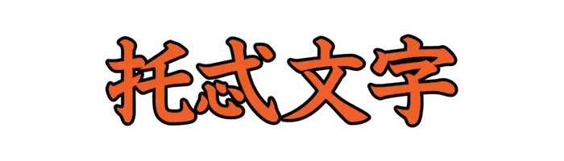 |
とどもじ |
オイラト語の表記のために、モンゴル文字を改良して作られた文字。 |
| Lv06_0257 |
|
えいたく |
詩文の添削を請うときに使うことば。郢正。 |
| Lv06_0258 |
|
すもり |
孵化しないで巣の中に残っている卵。また、あとに取り残されること。 |
| Lv06_0259 |
|
そうけ |
竹製の皿。竹を編んで作ったざる。 |
| Lv06_0260 |
|
ね |
列を作ってゆっくりと進む。 |
| Lv06_0261 |
|
ざっとう |
さわがしくこみあうこと。また、人混み。 |
| Lv06_0262 |
|
せいけんろく |
江戸後期の漢詩文集。学問論、時局論、五七条、詩歌などを収める付録とから成る。 |
| Lv06_0263 |
|
やりがんな |
木材の表面を削り仕上げる工具。 |
| Lv06_0264 |
|
らば |
奇蹄目ウマ科の動物。雄のロバと雌のウマの交雑種。 |
| Lv06_0265 |
|
はったい |
大麦を炒って焦がし、ひいて粉にしたもの。干菓子の材料とする。 |
| Lv06_0266 |
 |
こうこ |
いかにも好ましいこと。ちょうどよいこと。 |
| Lv06_0267 |
|
ござ |
『ある』の丁寧語。あります。ございます。 |
| Lv06_0268 |
 |
けいがしら |
漢字の部首、頭(かしら)の一つ。 |
| Lv06_0269 |
|
しゅしょ |
秦書八体のひとつ。ほこなどの兵器に用いた字体であるとされる。 |
| Lv06_0270 |
|
と、とど |
動かないようにする。引き止める。 |
| Lv06_0271 |
|
ゆが、ゆび |
あくを抜くために、熱湯をくぐらせる。また、さっとゆでる。 |
| Lv06_0272 |
|
さんさく、せんさく |
水の落ちる音のたとえ。また、魚などが浮き沈みするさま。 |
| Lv06_0273 |
|
あぐ |
釣り針の先端近くの内側を向いた小さな鉤。かかった魚を逃がさないための部分。 |
| Lv06_0274 |
|
せいわく |
青い土のこと。 |
| Lv06_0275 |
|
いだ |
抱きかかえる。しっかりとかかえるように持つ。 |
| Lv06_0276 |
|
よ |
かしこい。すぐれている。 |
| Lv06_0277 |
|
くちひび |
唇にできるひび。また、吹き出物。 |
| Lv06_0278 |
|
おめあし |
膝から下が腫れる足の病。 |
| Lv06_0279 |
|
ちちほむ、ちちぼむ |
皮膚にできる風疹のような小さな瘡。 |
| Lv06_0280 |
|
ひろ |
空間や面積、範囲などが大きい。 |
| Lv06_0281 |
 |
へご |
ヘゴ目ヘゴ科の常緑性シダ植物。湿度の高い林中などに生息する。 |
| Lv06_0282 |
|
けんこう |
武器をしまいこんで再び用いないこと。転じて、世が治まること。 |
| Lv06_0283 |
|
いまし |
注意する。 |
| Lv06_0284 |
|
かてい |
豚のこと。 |
| Lv06_0285 |
|
たーる |
有機物質の熱分解によって得られる、粘り気のある黒から褐色の油状の液体。 |
| Lv06_0286 |
|
かいき |
つぶすこと。壊毀。 |
| Lv06_0287 |
|
かいく |
わらじのこと。 |
| Lv06_0288 |
|
はいもとおろ |
はいまわっている。のびて絡みついている。 |
| Lv06_0289 |
|
いいとよ、いいどよ |
フクロウの古名。 |
| Lv06_0290 |
|
たくけん |
清めること。 |
| Lv06_0291 |
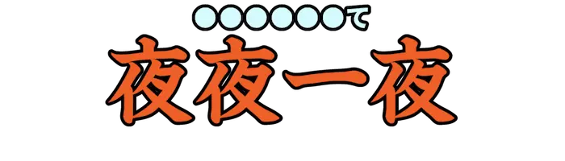 |
よがなよっぴて |
夜どおし。一晩中。 |
| Lv06_0292 |
|
いぶせ |
気分が晴れず、うっとうしい。気づまりである。 |
| Lv06_0293 |
|
くずしがみ、くくりがみ |
婦人が喪中に麻や布で髪を結び束ねる髪形。 |
| Lv06_0294 |
|
かんかんのう、かんかんええ |
江戸時代、長崎から流行した中国風の踊り。『看看踊(かんかんおどり)』とも。 |
| Lv06_0295 |
|
がんかりがね |
狂言。各流。摂津の百姓と和泉の百姓が、上頭に年貢の初雁をささげる。 |
| Lv06_0296 |
|
うわなり |
歌舞伎、浄瑠璃の外題。 |
| Lv06_0297 |
|
くんげき |
衣装の裾と、はきもの。徒行者の衣服。 |
| Lv06_0298 |
|
しるまし |
奇怪な徴候。不吉な前兆。 |
| Lv06_0299 |
|
ちがい |
貝類で、浮遊性幼生の時期をおえ、岩石や砂泥などに定着しはじめて、まもないもの。 |
| Lv06_0300 |
|
ねり |
からすきの部分の名。車の前に水平に出たながえ状のもの。『耒轅(とりくび)』とも。 |
| Lv06_0301 |
|
てっこうろく |
中国、明初の漆工芸の専門書。中国漆工芸の代表的な著書とされる。 |
| Lv06_0302 |
|
しねいと |
布の末端にできる織り余りの糸。はたじね。 |
| Lv06_0303 |
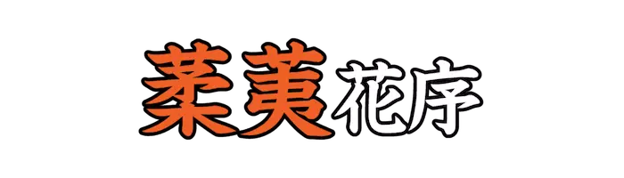 |
じゅうてい |
穂状花序の一型。花軸に柄のない単性花が密について垂れ下がるもの。 |
| Lv06_0304 |
|
しゅさ |
鼻部の皮膚が赤みがかり、毛穴の部分に発疹ができ、こぶのようにはれあがる鼻。 |
| Lv06_0305 |
|
はふ |
鳥が勢いよく飛びあがる。とびかける。 |
| Lv06_0306 |
|
ししむし |
死災の前兆を示す、不吉とされる虫の名。『日本霊異記』より。 |
| Lv06_0307 |
|
けんぎょう |
物事を点検し、誤りをただすこと。 |
| Lv06_0308 |
|
はなかけ |
はなきりの刑によって処刑されること。また、鼻が欠け落ちること。 |
| Lv06_0309 |
 |
はげやま |
草木が生育していない山。 |
| Lv06_0310 |
|
はみかえ |
病気が再発する。ぶりかえす。はみかえる。 |
| Lv06_0311 |
|
りょうてん |
消滅すること。 |
| Lv06_0312 |
|
りょうりょう |
こえること。 |
| Lv06_0313 |
|
めいばく |
くらくて遠いこと。また、幽玄であること。特に、死後の世界をいう。 |
| Lv06_0314 |
|
きゅうそう |
玉や金属が触れあって美しく鳴り響くさま。 |
| Lv06_0315 |
|
ろーむ |
砂、シルト、粘土をほぼ等量に含んだ土壌。 |
| Lv06_0316 |
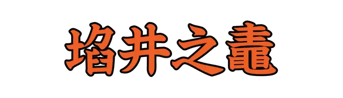 |
かんせいのあ |
世の中のことを知らず、狭い見識や考え方にとらわれていることのたとえ。 |
| Lv06_0317 |
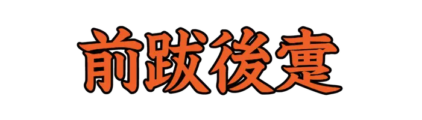 |
ぜんばつこうち |
どうすることもできない窮地に追い込まれることのたとえ。 |
| Lv06_0318 |
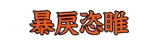 |
ぼうれいしき |
好き勝手に振る舞い、乱暴で残忍な様子。 |
| Lv06_0319 |
|
りょうけつ |
脂と血。 |
| Lv06_0320 |
|
しじゅつ |
恵むこと。 |
| Lv06_0321 |
|
しえん |
広いことと狭いこと。広さと狭さ。 |
| Lv06_0322 |
 |
しし |
豚の切り身。 |
| Lv06_0323 |
|
しきゅう |
身を安んずること。 |
| Lv06_0324 |
|
しごう |
神に供える穀類の美称。 |
| Lv06_0325 |
|
たいしゅ |
ほこのこと。 |
| Lv06_0326 |
|
ていあい |
靴底の釘のこと。『釘鞋(ていあい)』とも。 |
| Lv06_0327 |
|
ていとう |
虹の異称。 |
| Lv06_0328 |
|
うるお |
潤うようにする。湿りを与える。 |
| Lv06_0329 |
|
ふ |
夜遅くまで起きている。夜ふかしをする。 |
| Lv06_0330 |
|
おそ |
危険を感じて不安になる。恐怖心を抱く。 |
| Lv06_0331 |
|
うしな |
なくす。なくなる。 |
| Lv06_0332 |
|
たから |
貴重で価値のあるもの。大切なもの。 |
| Lv06_0333 |
|
み |
注意してしっかりと目でとらえる。 |
| Lv06_0334 |
|
はかりごと |
くわだて。計画。計略。 |
| Lv06_0335 |
|
ひじり |
知徳のすぐれた人。 |
| Lv06_0336 |
|
ないがま |
物をなぎ切るための鎌。『薙鎌(なぎがま)』が変化した語。 |
| Lv06_0337 |
|
たぐい |
仲間。同類。ともがら。 |
| Lv06_0338 |
|
わざわ |
火事や洪水、地震などのよくない出来事。 |
| Lv06_0339 |
|
ごと |
比喩的に、同等や類似の意を表す語。 |
| Lv06_0340 |
|
あつ |
物の一方から反対側までの隔たりが大きい。あつみがある。 |
| Lv06_0341 |
|
したが |
つきしたがう。従いまもる。 |
| Lv06_0342 |
|
おさ |
一つにまとまる。すべる。 |
| Lv06_0343 |
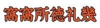 |
おーすとりあ |
中央ヨーロッパに位置する連邦共和制国家。首都はウィーン。 |
| Lv06_0344 |
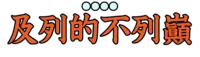 |
いぎりす |
ヨーロッパの北西部に位置する島国。首都はロンドン。 |
| Lv06_0345 |
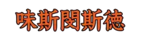 |
うぇすとみんすたー |
ロンドンのセントラル・ロンドンの地区のひとつ。観光スポットとして知られる。 |
| Lv06_0346 |
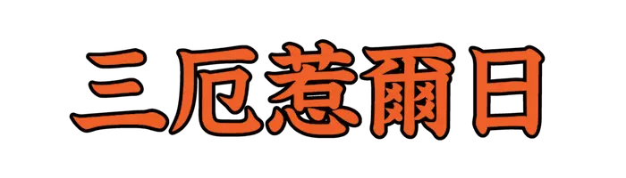 |
せんとじょーじず |
カリブ海のグレナダの首都。また、セント・ジョージ教区の中心地。 |
| Lv06_0347 |
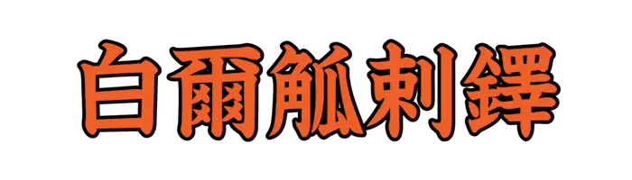 |
べおぐらーど |
セルビア共和国の首都。ヨーロッパ最古の都市のひとつ。 |
| Lv06_0348 |
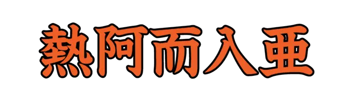 |
じょーじあ |
南コーカサスにある共和制国家。首都はトビリシ。 |
| Lv06_0349 |
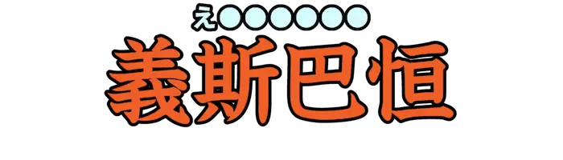 |
どいつ |
ヨーロッパの西部に位置する国。首都はベルリン。 |
| Lv06_0350 |
|
さと、わか |
はっきりと理解する。見抜く。 |
| Lv06_0351 |
|
へ |
すぎる。経過する。 |
| Lv06_0352 |
|
つら |
長くつらねる。絶えない。 |
| Lv06_0353 |
|
ただ |
突き詰める。問いただす。 |
| Lv06_0354 |
|
うやうや |
礼儀にかなって丁寧である。 |
| Lv06_0355 |
|
そ |
しはじめる。はじめてする。 |
| Lv06_0356 |
|
た |
さがった状態になる。 |
| Lv06_0357 |
|
まじ |
いりまじる。 |
| Lv06_0358 |
|
なお |
修理する。病気や怪我を治療する。 |
| Lv06_0359 |
|
まつ |
マツ目マツ科の常緑針葉樹の総称。さまざまな文化や信仰の対象とされている。 |
| Lv06_0360 |
|
たよ |
何かについての情報。手紙。知らせ。 |
| Lv06_0361 |
|
つよ |
活気にあふれている。勇ましい。 |
| Lv06_0362 |
|
く、くら |
ものを食べる。噛む。 |
| Lv06_0363 |
|
さ |
眠っている状態から、意識のはっきりした状態に戻す。 |
| Lv06_0364 |
|
くら |
めしを食べる。また、めしを食べさせる。 |
| Lv06_0365 |
 |
ため |
こころみる。調べる。 |
| Lv06_0366 |
|
たぐ |
くらべる。並べて比較する。 |
| Lv06_0367 |
|
ほるもか |
今にも滅びそうなさま。 |
| Lv06_0368 |
|
あいたし |
痛みを感じたときに発する感動詞。 |
| Lv06_0369 |
|
けらけらおんな |
日本の妖怪。巨大な中年女の姿で、塀越しにけらけらと笑うとされる。 |
| Lv06_0370 |
|
のぞ |
取ってなくする。すてる。 |
| Lv06_0371 |
|
はじ |
物事が行われていない状態から行う状態になる。行われだす。 |
| Lv06_0372 |
|
なたね |
アブラナ目アブラナ科の二年草。『セイヨウアブラナ』とも。 |
| Lv06_0373 |
|
ひとりむし |
季語で、夏の夜、灯火に集まってくる虫。ヒトリガの類。 |
| Lv06_0374 |
|
ねずみ |
ネズミ目の動物の総称。 |
| Lv06_0375 |
|
かいけいし |
青磁の碗のふたと台。宮中で元日の供御に用いた。 |
| Lv06_0376 |
 |
くずり |
食肉目イタチ科の動物。哺乳類や鳥類の卵、動物の死骸、果実などを食べる。 |
| Lv06_0377 |
|
もと |
従わない。言うことを聞かない。 |
| Lv06_0378 |
|
ひそ |
他人に知られないように行うさま。 |
| Lv06_0379 |
|
ちょうかくきひ |
家の造りに威厳があって、美しいこと。 |
| Lv06_0380 |
|
なご |
人々の気持がとけあって穏やかなさま。気分がやわらいでいるさま。 |
| Lv06_0381 |
|
すいば |
ナデシコ目タデ科の多年草。北半球の温帯に広く分布する。 |
| Lv06_0382 |
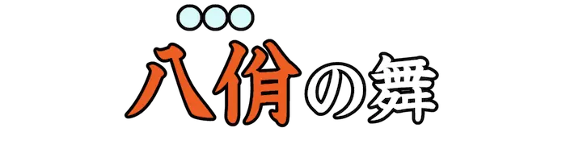 |
やつら |
中国唐代の雅楽に用いられた舞。 |
| Lv06_0383 |
 |
ひすかわざ |
ひねくれた行ない。また、みだりがわしい行為。 |
| Lv06_0384 |
|
まぐろ |
スズキ目サバ科マグロ属の魚の総称。世界各地で食用魚として漁獲されている。 |
| Lv06_0385 |
|
そぼ |
たわむれる。ふざける。じゃれる。また、きどる。様子がくだけている。 |
| Lv06_0386 |
|
うし |
十二支の二番目。方位では北北東。 |
| Lv06_0387 |
|
の |
乗り物の上、または中に人や物を置く。また、運送用のものの上や内部に移す。 |
| Lv06_0388 |
|
とうろう、こうろう |
頭の働きが鈍く、頑固なこと。 |
| Lv06_0389 |
|
いくさ |
戦争。たたかい。 |
| Lv06_0390 |
|
はだ |
手や足を大きく広げて立つ。また、進路などをふさぐようにして立つ。 |
| Lv06_0391 |
|
わ |
一つにまとまっているものをいくつかの部分にする。区分する。 |
| Lv06_0392 |
|
しんへん |
明らかでないさま。はっきりしないさま。 |
| Lv06_0393 |
|
しんもん |
頭頂の縫合部。ひよめき。 |
| Lv06_0394 |
|
からむし |
イラクサ目イラクサ科の多年草。糸やひも縄、衣類など幅広く利用される。 |
| Lv06_0395 |
|
つっかけ |
足の爪先のほうをひっかけるようにして履く手軽な履物。 |
| Lv06_0396 |
|
こえんどろ |
セリ目セリ科の一年草。生葉は香辛料として利用される。 |
| Lv06_0397 |
|
にしどち |
特に、アゲハチョウやスズメガのさなぎ。『西はどっち』から来ているとされる。 |
| Lv06_0398 |
|
らかるい |
食用にするウリ類のこと。 |
| Lv06_0399 |
|
ちげき |
葛布。また、それを用いて仕立てた衣服やかたびら。 |
| Lv06_0400 |
|
たちはめ、たちばめ |
植物の繊維で作った、履物の底につける牛の革。また、それをつけた履物。 |
{kind=link}
{kind=link}
{kind=link}
{kind=link}

{kind=link}
{kind=link}
{kind=link}
{kind=link}
{kind=link}
{kind=link}
{kind=link}
{kind=link}
{kind=link}
{kind=link}
{kind=link}
{kind=link}
{kind=link}
{kind=link}
{kind=link}
{kind=link}
{kind=link}

{kind=link}
{kind=link}
{kind=link}
{kind=link}
{kind=link}
{kind=link}
{kind=link}
{kind=link}
{kind=link}
{kind=link}
{kind=link}
{kind=link}
{kind=link}
{kind=link}
{kind=link}
{kind=link}
{kind=link}
{kind=link}
{kind=link}
{kind=link}
{kind=link}
{kind=link}
{kind=link}
{kind=link}
{kind=link}
{kind=link}
{kind=link}
{kind=link}
{kind=link}
{kind=link}
{kind=link}
{kind=link}
{kind=link}
{kind=link}
{kind=link}
{kind=link}
{kind=link}

{kind=link}
{kind=link}

{kind=link}
{kind=link}
{kind=link}
{kind=link}
{kind=link}
{kind=link}
{kind=link}
{kind=link}
{kind=link}
{kind=link}
{kind=link}
{kind=link}
{kind=link}
{kind=link}
{kind=link}
{kind=link}

{kind=link}
{kind=link}
{kind=link}
{kind=link}
{kind=link}
{kind=link}
{kind=link}
{kind=link}
{kind=link}
{kind=link}
{kind=link}
{kind=link}
{kind=link}
{kind=link}
{kind=link}
{kind=link}
{kind=link}
{kind=link}
{kind=link}
{kind=link}
{kind=link}
{kind=link}
{kind=link}
{kind=link}
{kind=link}
{kind=link}
{kind=link}
{kind=link}
{kind=link}
{kind=link}
{kind=link}
{kind=link}
{kind=link}
{kind=link}
{kind=link}
{kind=link}
{kind=link}
{kind=link}
{kind=link}
{kind=link}
{kind=link}
{kind=link}
{kind=link}
{kind=link}
{kind=link}
{kind=link}
{kind=link}
{kind=link}
{kind=link}
{kind=link}
{kind=link}
{kind=link}
{kind=link}
{kind=link}
{kind=link}
{kind=link}
{kind=link}
{kind=link}
{kind=link}
{kind=link}
{kind=link}
{kind=link}
{kind=link}
{kind=link}
{kind=link}
{kind=link}
{kind=link}
{kind=link}
{kind=link}
{kind=link}
{kind=link}
{kind=link}
{kind=link}
{kind=link}
{kind=link}
{kind=link}
{kind=link}
{kind=link}
{kind=link}
{kind=link}
{kind=link}
{kind=link}
{kind=link}
{kind=link}
{kind=link}
{kind=link}
{kind=link}
{kind=link}

{kind=link}
{kind=link}
{kind=link}
{kind=link}
{kind=link}
{kind=link}
{kind=link}
{kind=link}
{kind=link}
{kind=link}
{kind=link}
{kind=link}
{kind=link}
{kind=link}
{kind=link}
{kind=link}
{kind=link}
{kind=link}
{kind=link}
{kind=link}
{kind=link}
{kind=link}
{kind=link}
{kind=link}
{kind=link}
{kind=link}
{kind=link}
{kind=link}
{kind=link}
{kind=link}
{kind=link}
{kind=link}
{kind=link}
{kind=link}
{kind=link}

{kind=link}

{kind=link}
{kind=link}
{kind=link}
{kind=link}
{kind=link}
{kind=link}
{kind=link}
{kind=link}
{kind=link}
{kind=link}
{kind=link}
{kind=link}
{kind=link}
{kind=link}
{kind=link}
{kind=link}
{kind=link}
{kind=link}
{kind=link}
{kind=link}
{kind=link}
{kind=link}
{kind=link}
{kind=link}
{kind=link}
{kind=link}
{kind=link}
{kind=link}
{kind=link}
{kind=link}
{kind=link}
{kind=link}
{kind=link}
{kind=link}
{kind=link}

{kind=link}
{kind=link}
{kind=link}
{kind=link}
{kind=link}
{kind=link}
{kind=link}
{kind=link}
{kind=link}
{kind=link}
{kind=link}
{kind=link}
{kind=link}
{kind=link}
{kind=link}
{kind=link}
{kind=link}
{kind=link}
{kind=link}
{kind=link}
{kind=link}

{kind=link}

{kind=link}
{kind=link}
{kind=link}
{kind=link}
{kind=link}
{kind=link}
{kind=link}
{kind=link}
{kind=link}
{kind=link}
{kind=link}
{kind=link}

{kind=link}
{kind=link}
{kind=link}
{kind=link}
{kind=link}
{kind=link}
{kind=link}
{kind=link}
{kind=link}
{kind=link}
{kind=link}
{kind=link}
{kind=link}
{kind=link}
{kind=link}
{kind=link}
{kind=link}
{kind=link}
{kind=link}
{kind=link}
{kind=link}
{kind=link}
{kind=link}
{kind=link}
{kind=link}
{kind=link}
{kind=link}

{kind=link}
{kind=link}
{kind=link}
{kind=link}
{kind=link}
{kind=link}
{kind=link}
{kind=link}
{kind=link}
{kind=link}
{kind=link}
{kind=link}

{kind=link}
{kind=link}
{kind=link}
{kind=link}
{kind=link}
{kind=link}
{kind=link}
{kind=link}
{kind=link}
{kind=link}
{kind=link}
{kind=link}
{kind=link}
{kind=link}
{kind=link}
{kind=link}
{kind=link}
{kind=link}
{kind=link}
{kind=link}
{kind=link}
{kind=link}
{kind=link}
{kind=link}
{kind=link}
{kind=link}
{kind=link}
{kind=link}
{kind=link}
{kind=link}
{kind=link}
{kind=link}
{kind=link}
{kind=link}
{kind=link}
{kind=link}
{kind=link}
{kind=link}
{kind=link}
{kind=link}
{kind=link}
{kind=link}

{kind=link}
{kind=link}
{kind=link}
{kind=link}
{kind=link}
{kind=link}
{kind=link}
{kind=link}
{kind=link}
{kind=link}

{kind=link}
{kind=link}
{kind=link}
{kind=link}
{kind=link}
{kind=link}

{kind=link}
{kind=link}
{kind=link}
{kind=link}
{kind=link}
{kind=link}
{kind=link}
{kind=link}
{kind=link}
{kind=link}
{kind=link}
{kind=link}
{kind=link}
{kind=link}
{kind=link}
{kind=link}
{kind=link}